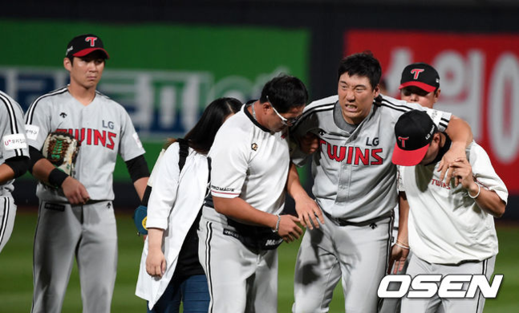

'역대급 DTD 추락' LG, 무엇이 문제였나
[OSEN=한용섭 기자] 류중일 감독이 새 사령탑으로 취임한 2018시즌, LG 트윈스는 포스트시즌 진출이 2년 연속 좌절됐다. 전반기까지 안정적인 4강권을 유지했던 LG는 후반기 급추락했다.
LG는 지난해 정규시즌 최종전이 끝나자마자 일찌감치 류중일 감독을 새 사령탑으로 영입했다. 오프 시즌엔 미국에서 돌아온 김현수를 4년 115억 원에 영입해 타선을 보강했다. 외국인 선수 라인업에 변화를 줬고, 2차 드래프트에서 베테랑들이 팀을 떠나갔다.

현장 리더십이 바뀌었고, 새로운 체제에서 젊고 역동적인 선수단을 도모했다. 전반기 4월 중순에서야 처음으로 5할 승률을 맞췄고, 8연승-8연패의 롤러코스터를 타기도 했다. 헨리 소사와 타일러 윌슨의 외국인 '원투 펀치'를 앞세워 4위권을 유지했다. 6월 19일 한화에 승리하면서 2위 자리를 하루 경험하기도 했다.
전반기를 4위로 마치고 올스타 휴식기를 맞았다. 후반기 넥센과 첫 3연전을 스윕하면서 51승 1무 41패로 승패 마진 +10까지 올라갔다. 그러나 이후 두산과 맞대결에서 번번이 패하면서 하락세를 탔다. 8월초 8연패를 당하며 5위로 추락했다.
